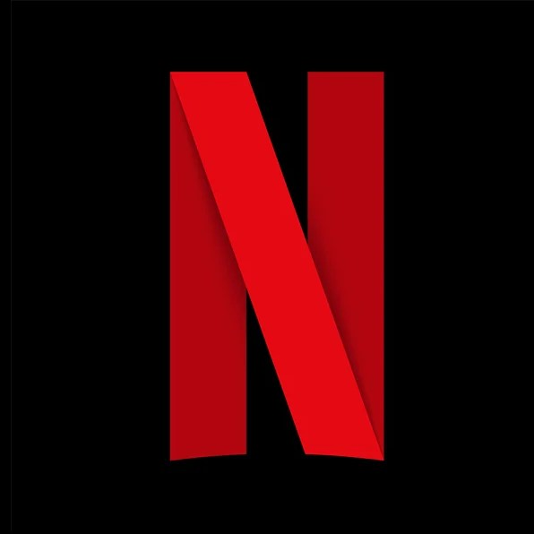

Onde assistir
- Assinatura
- Assistir


Bee and PuppyCat é uma série de animação americana que segue as aventuras de Bee, uma jovem que está passando por dificuldades financeiras e que encontra um estranho gato-cão chamado PuppyCat. Juntos, Bee e PuppyCat embarcam em missões mágicas em diferentes planetas e dimensões, trabalhando como agentes interdimensionais para ganhar dinheiro suficiente para pagar as contas. Eles encontram diversos personagens peculiares e enfrentam diferentes desafios. série é conhecida por sua animação única e colorida, com um estilo que mistura elementos do anime japonês e da animação americana. Além disso, a história é repleta de humor e elementos mágicos, criando uma atmosfera encantadora e divertida que cativa espectadores de todas as idades.
A relação entre Bee e PuppyCat é um dos pontos altos da série, apresentando uma dinâmica divertida e adorável entre os dois personagens, abordando temas importantes como amizade, lealdade e resiliência, adicionando profundidade à história e aos personagens.
Apesar de cores realmente bonitas, a animação tem suas decaídas. A dublagem é meio duvidosa, mesmo que acaba virando uma marca do desenho. A trama é extremamente confusa, tendo uma história que até puxaria ao non-sense da comédia.